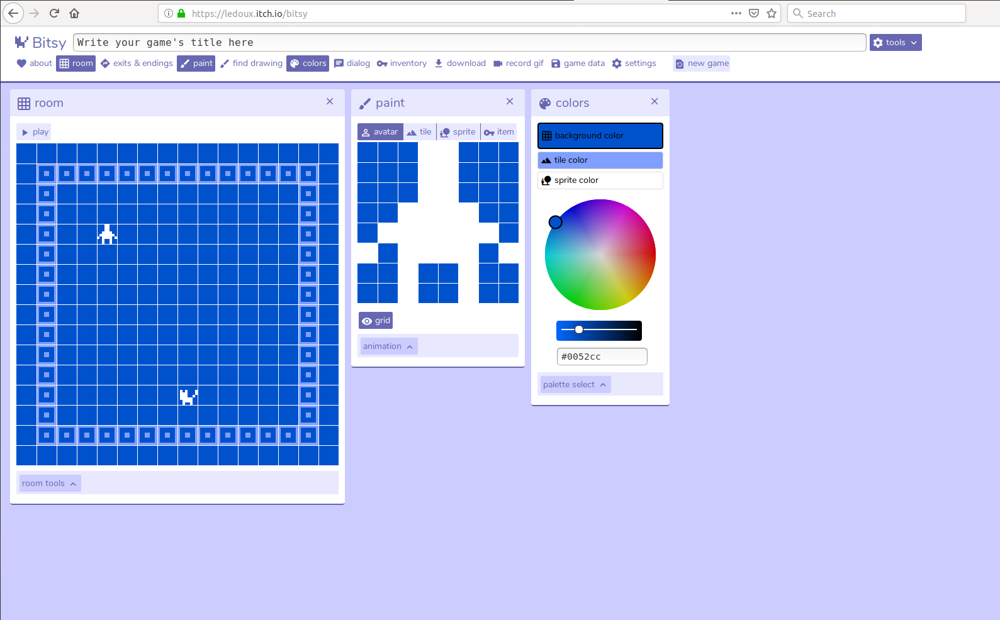
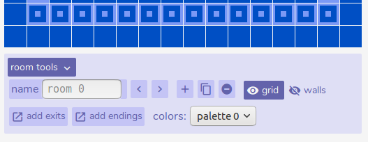
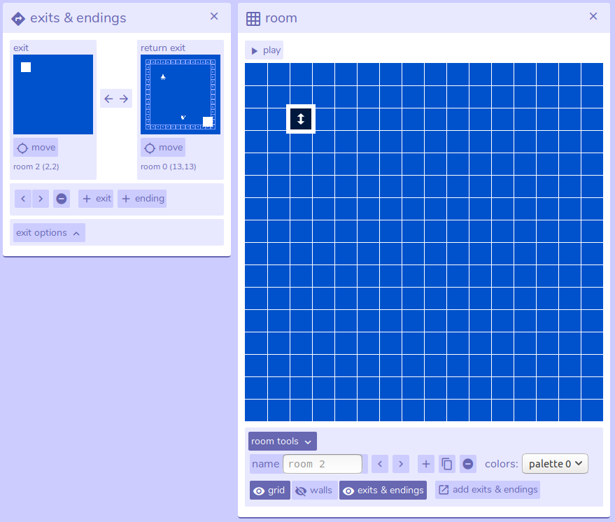

Bitsy is a tool that lets you create stories that look like old-fashioned computer games. Instead of reading your story you can move your character around and decide which bits to read and where to go next.
A great example is this story of Botwards adventure by Robotorium
https://littlesandbox.co.uk/wp-content/uploads/2018/09/Botward.html
This story tells us about biology and how cells work.
https://domesticscience.org.uk/criticalkits/BacteriophageTrainingDay.html
This is the story of someone telling us how they designed a game and entered it into a competition.
To get started open the Bitsy editor by following this link
Now click 'Run tool'
At the top of the page you will see "Write your game's title here"
Type the name of your story here, you can edit this later if you change your mind.
Next to the title is a blue 'tools' button, clicking this will show all the different tools available in Bitsy underneath the game title.
Click on the buttons to open or close the tools, each tool opens in a new box in the editor window.
Set up your editor to show the Room, Paint and Colors tools.

Bitsy games are based on ‘rooms’. You can have as many rooms as you like, all linked together by exits. We already have a room in our Bitsy story.
Click on ‘Play’ to try it out. Use the arrow keys on your keyboard (or w,s,a and d) to move your character around the screen.
Before we carry on click ‘Stop’
The room we have is a great start if we want to make a game about a cat. But it’d be boring if we all made the same story so let's look at how we can change the way things look. We will use the tools called ‘Paint’ and ‘Colors.’
Let's look at the paint window first, this is where we design all the characters, objects and scenery in our story.
Across the top of the ‘paint’ window are four tabs; Avatar, Tile, Sprite and Item. Click on these to see what they look like.
In Bitsy we only have 8x8 pixels to draw our avatar with, and these can only be blank or filled. So your avatar needs to be a really simple design.
Think of the story you want to tell, and think about how your main character should look. Click on the squares to turn the pixels on or off and make a picture.
Underneath the Avatar picture is a button called ‘Animation.’ If you click this you’ll see smaller copies of your Avatar. Click on ‘Frame 2’ and make small changes to your character. In the preview window you will see a simple animation.
Now let's change the tiles, these are the scenery or background of your story. Click on the ‘tiles’ tab. You can change this tile in exactly the same way as the Avatar.
Try changing the tile to make a different design. Notice how all the tiles in your room change to your new design
Click on the squares in the 'Room' tool to add new tiles to the room.
Just like with your avatar you can animate tiles, click on the 'animation' button and edit frame 2
In each story we can only have one Avatar, but as many different tiles as we like. Look underneath the tile we have just changed, there are some extra buttons we didn’t have for the avatar.
The ‘+’ lets us make a new tile. Try it, and make a new design. Then add some to your room.
Next to the ‘+’ is the ‘copy’ button (the one that looks like two sheets of paper) This makes a new copy of the tile we are currently looking at, so we can make small changes rather than having to start from scratch.
Notice how each tile has a name, we can change these names to something that makes more sense to us.
Now we have more than one tile we can use ‘<’ and ‘>’ to move between our tiles.
Underneath the ‘name’ box is a button called ‘wall’ if we click this it becomes darker. This tells Bitsy that we want to stop our Avatar from walking through the tile.
Add more tiles to your story. These can be scenery that the avatar can walk through, or walls that cannot be walked through.
A sprite is another character in our story, we can’t move it but our avatar can walk up to it and see what it is.
Sprites can be edited and added to the room just like tiles or the avatar. Like tiles you can have more than one sprite in your story.
Sprites have an extra option, called ‘dialog’. This is the text that the person reading your story will see if they walk into them.
Add some sprites to your story, include dialogue to let people know who the sprite is, or give some instructions about where to go or what to do.
Items are like sprites you can have more than one, and when the avatar walks into them they show dalogue.
Unlike sprites items are picked up by the avatar, Bitsy keeps a count of how many have been picked up in the Inventory tool.
Add some items to your story, include dialogue to let people know what the item is, or give some instructions about where to go or what to do.
In Bitsy we can only ever have three different colours at any time. Background, Tile and Sprite
Click on each of these in the ‘color’ window and change them using the coloured circle.
The palette select button lets you save different palettes with different names. This lets you quickly change colour schemes and lets you use different palettes in different rooms of your story
Now we know how to make an avatar, tiles, sprites and items use them to make your first Bitsy story.
Items are like sprites you can have more than one, and when the avatar walks into them they show dalogue.
At the bottom of the room window, the one that shows your story, is a button called ‘room tools’ Click on it to see more options.
Room tools shows you the name of the room you are in and lets you add new ones with create (‘+’) and copy (The button that looks like two sheets of paper) Again the ‘<’ and ‘>’ buttons let you move between rooms.
Create a new room and change the tiles, sprites and items to make it look different from the first.
Use palettes if you want this new room to have different colours
Next we need to tell Bitsy how our Avatar will move between the rooms. To do this we use the ‘Exits’ tool.
Open the exit tool.
Click on ‘exit’ to add a new exit’.
This will add an exit from the room you are in that goes to the next room in your story.
To change where the exit is placed in the room click on move in the exit tool, then click in the room where you want to move it to.
You can have more than one exit in a room so you can make stories that move between rooms.
Stories usually have an ending too. In Bitsy you can add squares that will end the story if the avatar walks on them.
You can have as many as you like, so you could have some happy endings, and some where things end badly.
Click on ‘ending’ to add a new ending’.
This will add an ending from the room you are in, if the avatar walks on it the message in 'ending dialog' will be shown and the story will stop
Change where the ending is placed by clicking the move button, just like with exits
Use everthing we have learned to make a story. Include sprites, items to be picked up, walls that can't be walked through and scenery, exits and endings.
If you want to do more with Bitsy there is a tool called Borksy that lets you add extra elements to your stories
https://ayolland.itch.io/borksy
For more information about using Borksy and links to other Bitsy tutorials have a look at the Borksy project page on Github
https://github.com/seleb/bitsy-hacks/
Bitsy has variables you can use to make dialouge conditional, so you can make a sprite tell a different story if you've picked up an item.
There is a good tutorial to show you how to use variables in Bitsy here
https://ayolland.itch.io/trevor/devlog/29520/bitsy-variables-a-tutorial
If you like a challenge see if you can complete Oliie's impossible game. It's not easy to tell what are walls, but it is possible to complete it!